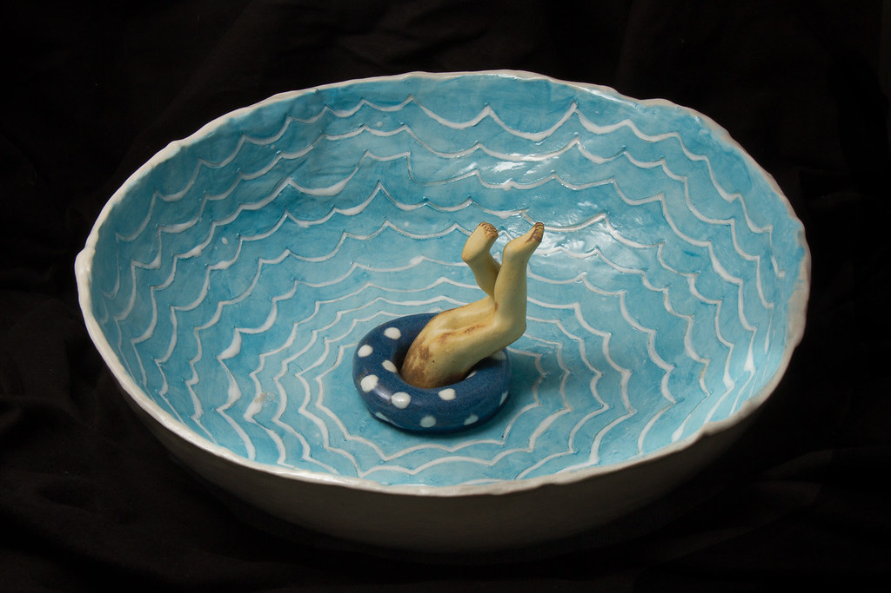
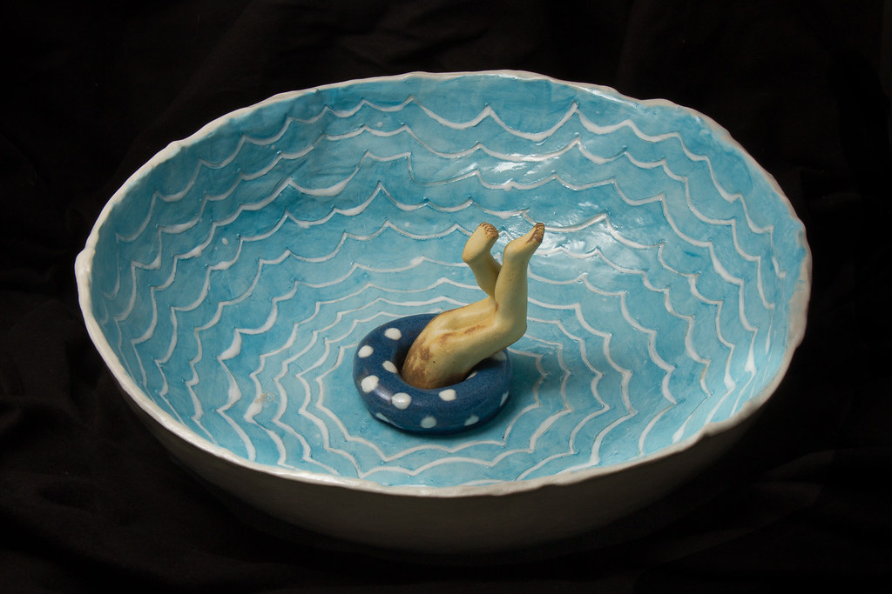

Seramik (Antik Yunanca: κεραμικός – keramikós, "çömleğe ilişkin, çömlekçilik", κέραμος – kéramos, "çömlekçi kili") iyonik veya kovalent bağlara sahip metal (veya metaloid) ve metal olmayan inorganik bileşik içeren katı bir malzemedir. Yaygın kullanım örnekleri earthenware (sırlı veya sırsız camsı olmayan çömlekler), porselen ve tuğladır. İnsanlar tarafından yapılan en eski seramikler, kendiliğinden veya silika gibi diğer malzemelerle karıştırılmış, ateşte sertleştirilmiş ve sinterlenmiş seramik çömlekler (örneğin kap ve çanaklar) veya kilden yapılmış figürinlerdi. Daha sonra seramikler pürüzsüz olma, renkli yüzeyler oluşturma ve camsı kullanım ile gözenekliliği azaltma amacıyla sırlandı ve pişirildi. Seramikler artık yerli, endüstriyel ve inşaat ürünlerinin yanı sıra çok çeşitli seramik sanatlarını da içinde barındırıyor. 20.yüzyılda, yarı iletkenler gibi ileri seramik mühendisliğinde kullanılmak üzere yeni seramik malzemeler geliştirilmiştir.


 


IREMION
Seramik satın almak ister misiniz?
İletişim